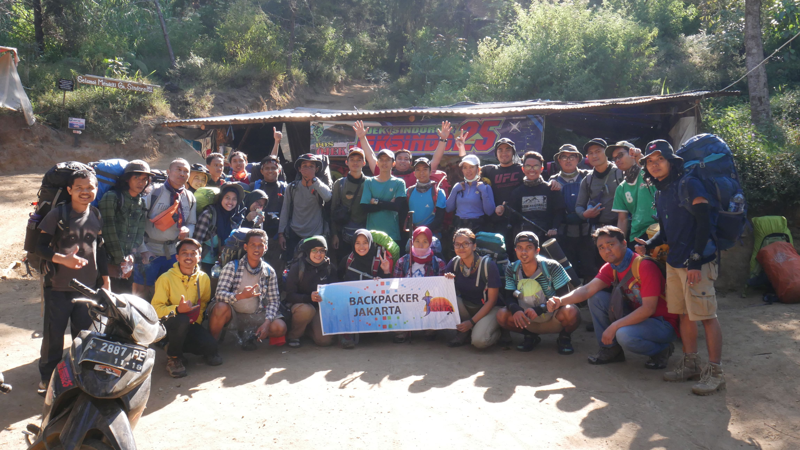
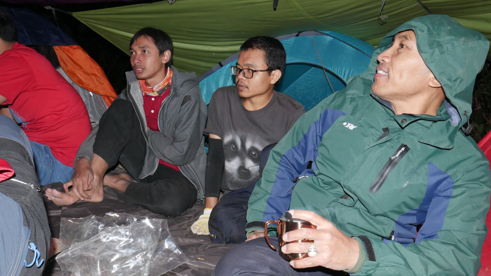
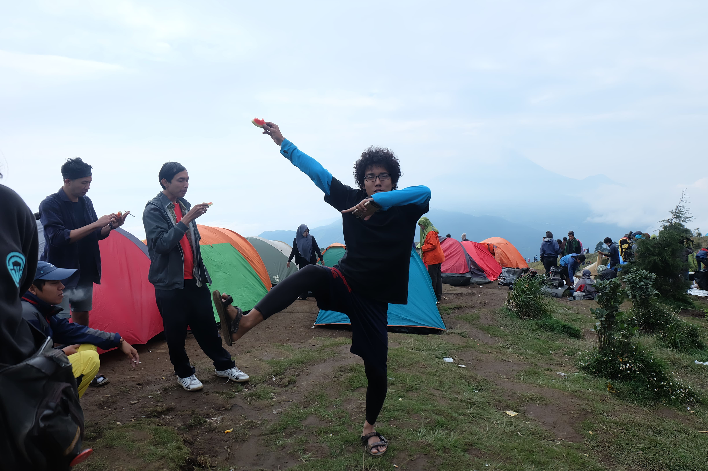

Berlelah lelahlah, manisnya hidup terasa setelah lelah berjuang. Jika engkau tak tahan lelahnya belajar, engkau akan menanggung perihnya kebodohan.
~IMAM SYAFI'I~

Ego adalah hijab antara manusia dan Tuhan. Saat kau berhasil menaklukan egomu, seluruh kegelapan akan berubah menjadi cahaya.
~RUMI~

Aku tak heran terhadap orang yang binasa, bagaimana ia sampai binasa. Yang membuatku kagum adalah orang yang selamat, bagaimana ia sampai selamat, padahal ada setan yang sangat jahat yang langit saja dijaga darinya, nafsu yang selalu mendorong kepada kejahatan dan dunia yang dijadikan terasa indah.
~HASAN AL-BASHRY~Agama diajarkan kepada manusia agar ia memiliki pengetahuan dan kesanggupan untuk menata hidup, menata diri dan alam, menata sejarah, kebudayaan, politik.
~EMHA AINUN NADJIB~
Yang menciptakan tujuh langit berlapis-lapis. Tidak akan kamu lihat sesuatu yang tidak seimbang pada ciptaan Tuhan Yang Maha Pengasih. Maka lihatlah sekali lagi, adakah kamu lihat sesuatu yang cacat? Kemudian ulangi pandangan(mu) sekali lagi (dan) sekali lagi, niscaya pandanganmu akan kembali kepadamu tanpa menemukan cacat dan ia (pandanganmu) dalam keadaan letih.
~Q.S. AL-MULK 3-4~
